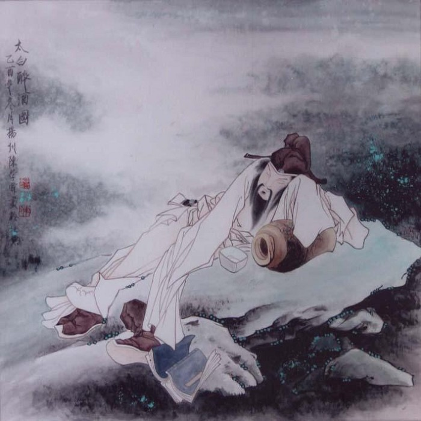

李白
李白（701年－762年） ，字太白，号青莲居士，又号“谪仙人”，唐代伟大的浪漫主义诗人，被后人誉为“诗仙”，与杜甫并称为“李杜”，为了与另两位诗人李商隐与杜牧即“小李杜”区别，杜甫与李白又合称“大李杜”。据《新唐书》记载，李白为兴圣皇帝（凉武昭王李暠）九世孙，与李唐诸王同宗。其人爽朗大方，爱饮酒作诗，喜交友 [1] 。
李白深受黄老列庄思想影响，有《李太白集》传世，诗作中多以醉时写的，代表作有《望庐山瀑布》《行路难》《蜀道难》《将进酒》《明堂赋》《早发白帝城》等多首。 [1]
李白所作词赋，宋人已有传记（如文莹《湘山野录》卷上），就其开创意义及艺术成就而言，“李白词”享有极为崇高的地位。